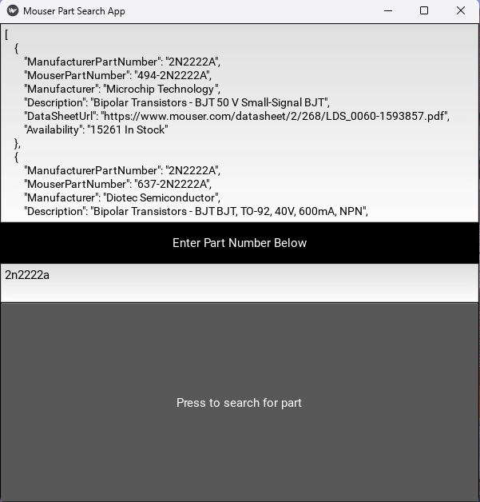

About
Program that allows you to search for electronic parts using Mouser's API. It utilizes the Kivy framework for the frontend GUI and FastAPI for backend communication with the Mouser API. The program returns part information in a dictionary format including the manufacturer, part number, availability, and URL to a datasheet.
This program serves as a convenient tool for engineers and hobbyists to quickly search for electronic components available on Mouser's vast catalog. It provides a user-friendly interface built with Kivy, making it easy to navigate and perform searches. The FastAPI backend efficiently communicates with Mouser's API to retrieve relevant part information.
Features
Search Interface: Input part details and search criteria through the intuitive GUI.
Real-time Data: Retrieves up-to-date information directly from Mouser's API.
Detailed Results: Returns a dictionary containing key part details such as manufacturer, part number, availability, and datasheet URL.
Datasheet Access: Direct access to datasheets for further reference.
Customizable: Easily adaptable for specific project needs and integrations.
Usage
Enter your part details and search criteria.
Click on the Submit button.
View the results displayed, including manufacturer, part number, availability, and datasheet URL.
Dependencies
Python 3.8
Kivy
FastAPI
Requests
Acknowledgements
Kivy - Open source Python framework for rapid development of applications..
FastAPI - Fast (high-performance) web framework for building APIs with Python 3.6+ based on standard Python type hints.
Mouser API - Mouser Electronics provides APIs for developers to access their vast product catalog.
GitHUb
Follow to gitgub project page
Images
